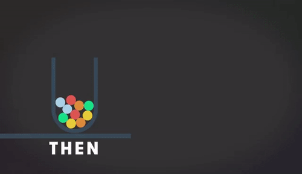

Social Big Data se refiere al análisis de la gran cantidad de información que se produce en las redes sociales. Algunos datos que muestran esto son:
Dos de las tendencias clave marcadas para el 2014 en el ámbito del Marketing Digital son el Social Media y el Big Data y, si actúan juntas, mucho mejor. Actualmente, es imposible oír hablar de una empresa, grande o pequeña, que no tenga una estrategia de Social Media consolidada, más cuando, a día de hoy, se aboga por la diversificación de redes sociales para no quedarse atrás. Entonces, ¿por qué el Big Data resulta interesante en los medios sociales? ¿Cuál es el beneficio que se extrae de todo ello?